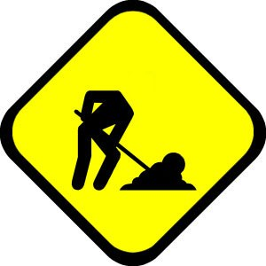

:: Lavori in corso ::

Se stai pensando: "Sono arrivato in questa pagina anche senza cliccare sull'omino", è ufficiale: sei un nerd.
Ora che sappiamo chi siamo, a cosa serve questa pagina? Semplice, A PERDERE ALTRO TEMPO, ma in modo costruttivo. Siamo su Swappa, mi pare evidente, ma siamo ancora in tempo per apportare qualche modifica al wiki? Qualcuno lo ritiene necessario? Vi sembra opportuno parlarne?
Io rispondo di sì a tutte le domande, e il fatto di non specificare "io" chi sono (non guardate l'autore della pagina, è tutto fumo negli occhi) ci rende tutti complicemente interessati.
Su allora, facciamo un bell'elencone di tutte le cose che vorremmo ma non abbiamo mai osato chiedere, senza farci scrupoli di coscienza: ogni proposta è consentita, starà al pueblo poi decidere se portarla avanti o meno. No perditempo, ne perdiamo già abbastanza da soli, grazie.
Alcune idee sono state già implementate su swappa.it, altre sono sperimentate su SwappaLab
WISH LIST:
- ido: aggiungere almeno un gruppo a quelli già esistenti, ovvero "main" "utenti" "uni" ecc.. nel nuovo gruppo andrebbero messe tutte quelle pagine che offrono (dis)informazioni socialmente (in)utili, come ad esempio il Touring Wiki, le recensioni, ecc
- ido: perché aggiungere un nuovo gruppo? per riorganizzare meglio la sidebar. Mi piacerebbe infatti che la sidebar si adattasse al gruppo in cui ci si trova, mostrando i link a pagine/categorie coerenti con la sezione. Ad esempio in "Uni" mostrasse il link ai docenti, o alle materie, o altro
- ido: fare in modo che ogni pagina abbia alcuni link "caldi" sempre accessibili e ben in mostra, incastonati direttamente nel layout. Per link caldi intendo home, forum, help, boh. Per ben in mostra intendo in alto da qlke parte nell'intestazione
- ido & teto: aggiungere categoria "Foto di laurea", possibilmente implementando una bella galleria immagini
- baby: vedere se si può cambiare dall'editor delle pagine il tipo di font
- denis & ido: aggiungere categoria "Cineterapia", ma soprattutto mantenerla :D
- denis & ido & baby: aggiungere sezione su recensioni di bar/ristoranti/altriPostiDoveSeMagna, ora come ora collocata nella categoria "Touring Wiki". In effetti sta già benone anche là
- teto: rivedere le categorie (aggiungerne o toglierne) esistenti e sfoltire la sidebar mettendo solo le voci effettivamente più utilizzate
- ido: per la skin nuova, anche a me piace round, personalmente anche quella col verdino. Nel caso provate qualche alternativa, ma non ci areniamo ancora :D
- fatto patty: creare una grammatica che generi frasi su swappa o sull'università da inserire nella home e che le cambi ogni giorno
- Invece di una grammatica, ho trovato questo escamotage:
- Si crea una pagina con un nome qualsiasi nel gruppo MottoDelGiorno
- Una
(:pagelist:) nella HomePage cerca a caso nel gruppo, e include la pagina:)
- denis & dario: creare sottocategoria Touring Bici con i sentieri e le ciclabili. Vabbeh dai buona ok.
- lara e baby: sezione lumache :)
- patty: aggiungo...nella sidebar mettere un qualcosa che pesca una lumaca da una delle pagine o così, col sottotitolo la lumaca del giorno
- fatto denis: mettere nella Home un pulsante che apre una pagina casuale del Wiki. Ok non serve a nulla, ma è carino :p
- baby: mi associo a quanto è stato appena menzionato :) checcarinoooooo!
- dario: baby ma non vale mettere in lista i commenti:)
- dario: ok l'ho fatto anche io:)
- Vedi qui
- dario: la mia proposta è di rendere la homepage più blog-like, ovvero con messaggi in ordine di data in stile blog, invece di usare la tabella laterale che è meno immediata
- patty: ci avevo pensato anche io...così le modifiche non dovremmo farle direttamente nella pagina giusto?
- Beh no, le modifiche le fai come al solito, però le organizziamo per data, ed in alto mettiamo i messaggi con date più recenti. Certo, se fosse automatizzato sarebbe comodo, ad esempio per spostare le news vecchie nella pagina dell'archivio, però per ora il volume di news non è tale da giustificare una cosa del genere:)
Torna alla Home